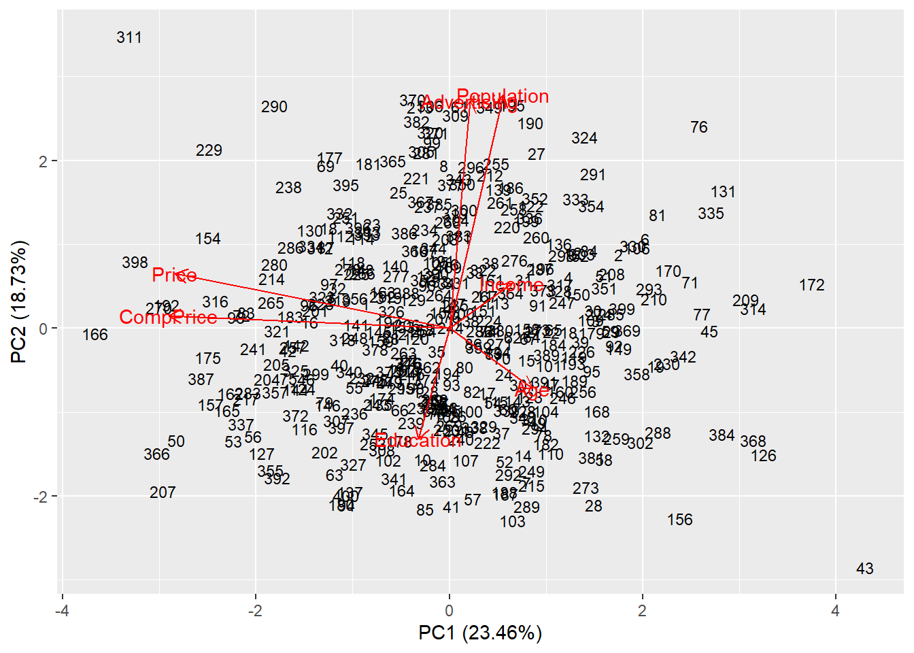

#Matriz de correlaciónm_cor <-cor(numericas) # representa la matriz de correlaciones mediante círculoscorrplot(m_cor,method="circle", type ='upper', diag =FALSE)
PCA
Código
pca <-prcomp(numericas,scale =TRUE)# con datos estandarizadosnames(pca)
[1] "sdev" "rotation" "center" "scale" "x"
center:contienen la media de las variables previa estandarización (en la escala original)
scale: contienen desviación típica de las variables previa estandarización (en la escala original)
ggplot(data =data.frame(prop_varianza_acum, pc =1:7),aes(x = pc, y = prop_varianza_acum, group =1)) +geom_point() +geom_line() +theme_bw() +labs(x ="Componente principal",y ="Prop. varianza explicada acumulada")
¿Cuántas CPs elegir?
Criterio 1: Porcentaje de variabilidad explicada
Se define un porcentaje de variabilidad mínimo que se desea explicar y se toman las primeras m componentes que alcanzan este porcentaje de explicación.
Por ejemplo se elige un porcentaje de 80% de variabilidad.
Código
round(prop_varianza_acum*100,2)# llevo datos a porcentaje
[1] 23.46 42.19 56.72 70.50 84.16 94.17 100.00
Criterio 2: Criterio de Kaiser
Consiste en retener las m primeras componentes tales que sus autovalores resulten iguales o mayores que 1.
Si la proporción de variabilidad explicada por \(Y1, Y2, · · ·, Ym\) se estabiliza a partir de un cierto valor de CP, entonces aumentar la dimensión no aportaría cambios significativos.
Código
fviz_eig(pca, ncp =7, addlabels =TRUE, main="")
Biplot
Los n objetos son ordenados en función de su puntaje en cada uno de los componentes analizados
Las p variables son representadas como vectores
Scores
Se estandarizan las variables originales y luego con la fórmula de la combinación lineal correspondiente para cada CP, se calculan los scores o puntajes de los vinos.
res.ind <-get_pca_ind(pca)knitr::kable(head(res.ind$coord,10), format ="html") %>% kableExtra::kable_styling() %>% kableExtra::scroll_box(width ="100%")
Dim.1
Dim.2
Dim.3
Dim.4
Dim.5
Dim.6
Dim.7
-0.8609224
0.2956968
0.4238498
-0.7066462
-1.1447556
0.1298289
0.5162957
1.7562531
0.8792255
0.3693384
0.7718860
1.0591391
1.4740716
0.3579915
1.5118330
0.0958802
0.8361156
0.0672019
1.1242515
0.8610406
0.4933420
1.2325995
0.6126380
-0.4863724
-0.1523573
-0.3494722
-1.3468562
0.3107267
-1.2080308
0.3462485
-0.3428633
-0.6478458
0.6058365
-0.5680669
0.3881327
2.0248540
1.0673539
0.2616404
1.0369430
-1.6747578
-1.0134409
1.4722249
0.8049335
-1.8354777
-1.0444605
0.8648973
-0.9058813
-0.0677651
-0.3524650
-0.0545755
1.9406418
-0.3847400
1.4316937
0.4092503
0.0896470
0.5398256
-0.1141053
-0.8504005
-2.0505746
1.9308344
0.3338578
-0.1841578
-0.0030234
-0.2770367
-1.5642691
-0.7340550
1.2216681
-1.6531902
-0.8549827
0.0211949
Código
autoplot(pca, data = df, shape = F, label.size =3, scale =0, # scale=0 biplot segun scoresloadings.label=T,# nombre de las variablesloadings=T)# variables como vectores

Y si se diferencia a cada punto según la variedad de vino?
Si se es el/la experto/a de dominio (o se le puede consultar) se puede dar una interpretación a qué aspecto del tema se refiere PC1 y PC2, considerando los loadings de las varibles originales.
Si dos variables forman ángulos pequeños; esto nos estaría diciendo que las variables están muy correlacionadas (en este ejemplo sería el caso de Price y CompPrice)
Si dos variables forman ángulos de 90°, entonces nos indica que ambas variables no están correlacionadas (por ejemplo Price y Population).
Los resultados del PCA son sensibles a la presencia de outliers por lo que pueden distorsionar el ordenamiento.
¿Y si se quiere graficar el PC2 vs PC3?
Código
autoplot(pca, x =2, y =3,data = df, colour ='Sales',loadings =TRUE, loadings.colour ='black',loadings.label =TRUE, loadings.label.size =3)
En Python
En este link se puede ver el código en Python para realizar PCA.
PCA robusto
Técnicas robustas
Una de las alternativas robustas propuestas es Minimun Covariance Determinant (MCD), y otra es el Minimum volume ellipsoid (MVE).
Para mas detalle de cada técnica mirar los papers correspondientes:
Comparando la varianza explicada entre PCA no robusto y MVE
Código
pca_out <-prcomp(df_out,scale =TRUE)# con datos estandarizadosautoplot(pca_out, data = df_out, shape = F, label.size =3, scale =0, # scale=0 biplot segun scoresloadings.label=T,# nombre de las variablesloadings=T)# variables como vectores
---title: "PCA-Parte 2"author: "Pamela E. Pairo- AID 2023"lang: esdescription: | Biplot y técnicas robustasformat: html: theme: flatly code-fold: show code-tools: true toc: true toc-location: left---```{r setup, include=FALSE}knitr::opts_chunk$set(echo =TRUE)knitr::opts_chunk$set(message =FALSE)knitr::opts_chunk$set(warning =FALSE)library(tidyverse)library(corrplot)library(rgl)library(GGally)library(reshape2)library(factoextra)library(ggfortify)library(ISLR)```# Base de datos sobre la venta de sillas de autos para chiques Un conjunto de datos simulados que contiene las ventas de sillas de coche en 400 locales diferentes.`Sales`: Unit sales (in thousands) at each location`CompPrice`: Price charged by competitor at each location`Income`: Community income level (in thousands of dollars)`Advertising`: Local advertising budget for company at each location (in thousands of dollars)`Population`: Population size in region (in thousands)`Price`: Price company charges for car seats at each site`ShelveLoc`: A factor with levels Bad, Good and Medium indicating the quality of the shelving location for the car seats at each site`Age`: Average age of the local population`Education`: Education level at each location`Urban`: A factor with levels No and Yes to indicate whether the store is in an urban or rural location`US`: A factor with levels No and Yes to indicate whether the store is in the US or not```{r}data("Carseats")df <-as_tibble(Carseats)glimpse(df)```Nos quedamos con las variables numéricas```{r}numericas <-select_if(df, is.numeric)numericas$Sales <-NULL```## Boxplots para todas las variables```{r}data_long <-melt(numericas) ggplot(data_long, aes(x=variable, y=value)) +geom_boxplot() +facet_wrap(~variable, scale="free")``````{r}#Matriz de correlaciónm_cor <-cor(numericas) # representa la matriz de correlaciones mediante círculoscorrplot(m_cor,method="circle", type ='upper', diag =FALSE) ```# PCA```{r}pca <-prcomp(numericas,scale =TRUE)# con datos estandarizadosnames(pca)````center`:contienen la media de las variables previa estandarización (en la escala original)`scale`: contienen desviación típica de las variables previa estandarización (en la escala original)`rotation`: contiene los *loadings*## Cargas o _loadings_```{r}knitr::kable(round(pca$rotation,2))``````{r}contrib <-as.matrix(round(pca$rotation,2))corrplot(contrib,is.corr=FALSE)``````{r}knitr::kable(round(pca$center,2)) #vector de medias```## Autovalores¿Qué proporción de la variabilidad total es explicada por cada una de las componentes?```{r}prop_varianza <- pca$sdev^2/sum(pca$sdev^2)prop_varianza_acum <-cumsum(prop_varianza)prop_varianza_acum``````{r}ggplot(data =data.frame(prop_varianza_acum, pc =1:7),aes(x = pc, y = prop_varianza_acum, group =1)) +geom_point() +geom_line() +theme_bw() +labs(x ="Componente principal",y ="Prop. varianza explicada acumulada")```# ¿Cuántas CPs elegir?## Criterio 1: Porcentaje de variabilidad explicadaSe define un porcentaje de variabilidad mínimo que se desea explicar y se toman lasprimeras _m_ componentes que alcanzan este porcentaje de explicación.Por ejemplo se elige un porcentaje de 80% de variabilidad.```{r}round(prop_varianza_acum*100,2)# llevo datos a porcentaje```## Criterio 2: Criterio de KaiserConsiste en retener las _m_ primeras componentes tales que sus autovalores resulten iguales o mayores que 1.```{r}screeplot(pca, type ="l", npcs =12)abline(h =1, col="red", lty=5)legend("topright", legend=c("Eigenvalue = 1"),col=c("red"), lty=5, cex=0.6)```## Criterio 3: Criterio del bastón rotoSi la proporción de variabilidad explicada por $Y1, Y2, · · ·, Ym$ se estabiliza a partir de un cierto valor de CP, entonces aumentar la dimensión no aportaría cambios significativos.```{r}fviz_eig(pca, ncp =7, addlabels =TRUE, main="")```# Biplot- Los n objetos son ordenados en función de su puntaje en cada uno de los componentes analizados- Las p variables son representadas como vectores## _Scores_Se estandarizan las variables originales y luego con la fórmula de la combinación lineal correspondiente para cada CP, se calculan los _scores_ o puntajes de los vinos.```{r}pca$x[,1]# scores para la primer componente (PC1)```_Scores_ para todas las CPs.```{r}res.ind <-get_pca_ind(pca)knitr::kable(head(res.ind$coord,10), format ="html") %>% kableExtra::kable_styling() %>% kableExtra::scroll_box(width ="100%")``````{r}autoplot(pca, data = df, shape = F, label.size =3, scale =0, # scale=0 biplot segun scoresloadings.label=T,# nombre de las variablesloadings=T)# variables como vectores```Y si se diferencia a cada punto según la variedad de vino?```{r}autoplot(pca, data = df, colour ='Sales',loadings =TRUE, loadings.colour ='black',loadings.label =TRUE, loadings.label.size =3)```## ¿Qué información podemos sacar del biplot? Tener en cuenta lo siguiente:- Si se es el/la experto/a de dominio (o se le puede consultar) se puede dar una interpretación a qué aspecto del tema se refiere PC1 y PC2, considerando los _loadings_ de las varibles originales.- Si dos variables forman ángulos pequeños; esto nos estaría diciendo que las variables están muy correlacionadas (en este ejemplo sería el caso de `Price` y `CompPrice`)- Si dos variables forman ángulos de 90°, entonces nos indica que ambas variables **no** están correlacionadas (por ejemplo `Price` y `Population`).- Los resultados del PCA son sensibles a la presencia de _outliers_ por lo que pueden distorsionar el ordenamiento.## ¿Y si se quiere graficar el PC2 vs PC3?```{r}autoplot(pca, x =2, y =3,data = df, colour ='Sales',loadings =TRUE, loadings.colour ='black',loadings.label =TRUE, loadings.label.size =3)```### En PythonEn [este link](https://github.com/PamelaPairo/maestria_DM/blob/main/AID/PCA/02_PCA%20en%20Python.ipynb) se puede ver el código en Python para realizar PCA.## PCA robusto**Técnicas robustas**Una de las alternativas robustas propuestas es *Minimun Covariance Determinant* (MCD), y otra es el *Minimum volume ellipsoid* (MVE).Para mas detalle de cada técnica mirar los papers correspondientes:1- Link de descarga [aqui](https://www.researchgate.net/publication/354058635_Robust_Principal_Component_Analysis_Using_Minimum_Covariance_Determinant_Estimator) para MCD2- Link de descarga [aquí](https://www.researchgate.net/publication/229803108_Minimum_Volume_Ellipsoid/link/59e1d3560f7e9b97fbe72fa9/download) para MVE.Se agregan *outliers* a la base de datos```{r}df_out<-rbind(as_tibble(Carseats), c (1, 900, 3, 100, 20, 3, "Good", 5, 10, "No", "No") ,c (5, 250, 3000, 0, 20, 150, "Good", 70, 10, "Yes", "Si") ,c ( 20, 15, 200, 500, 20, 100, "Medium", 20, 20, "No", "No"))glimpse(df_out)``````{r}df_out <-df_out |>mutate_if(is.character, as.numeric)``````{r}df_out$Sales <-NULLdf_out$ShelveLoc <-NULLdf_out$Urban <-NULLdf_out$US <-NULL```### Mínimo Determinante de la Covariancia (MCD)```{r}pca_mcd <-princomp(df_out, cor=TRUE,scores=TRUE,covmat=MASS::cov.mcd(df_out))#se especifica MCDsummary(pca_mcd)```### 2- Elipsoide de volumen mínimo (MVE)Esta estimación busca el elipsoide de volumen mínimo que contiene al menos la mitad de los puntos del conjunto de datos.```{r}pca_mve <-princomp(df_out, cor=TRUE, scores=TRUE,covmat=MASS::cov.mve(df_out))#se especifica MVEsummary(pca_mve)``````{r}library(ggpubr)par(mfrow=c(2,1))p1 <-fviz_eig(pca_mve, ncp =7, addlabels =TRUE, main="MVE")p2<-fviz_eig(pca_mcd, ncp =7, addlabels =TRUE, main="MCD")ggarrange(p1,p2, nrow =1, ncol =2)``````{r}screeplot(pca_mve, type ="l", npcs =7)abline(h =1, col="red", lty=5)legend("topright", legend=c("Eigenvalue = 1"),col=c("red"), lty=5, cex=0.6)```## Comparando la varianza explicada entre PCA no robusto y MVE```{r}pca_out <-prcomp(df_out,scale =TRUE)# con datos estandarizadosautoplot(pca_out, data = df_out, shape = F, label.size =3, scale =0, # scale=0 biplot segun scoresloadings.label=T,# nombre de las variablesloadings=T)# variables como vectores``````{r}p3 <-fviz_eig(pca_out, ncp =7, addlabels =TRUE, main="No robusto",barfill ="#69b3a2",barcolor ="#69b3a2")ggarrange(p2,p3, nrow =1, ncol =2)```## Scree plot del PCA NO robusto```{r}screeplot(pca_out, type ="l", npcs =12)abline(h =1, col="red", lty=5)legend("topright", legend=c("Eigenvalue = 1"),col=c("red"), lty=5, cex=0.6)```## Scree plot del PCA MCD```{r}screeplot(pca_mcd, type ="l", npcs =7)abline(h =1, col="red", lty=5)legend("topright", legend=c("Eigenvalue = 1"),col=c("red"), lty=5, cex=0.6)```